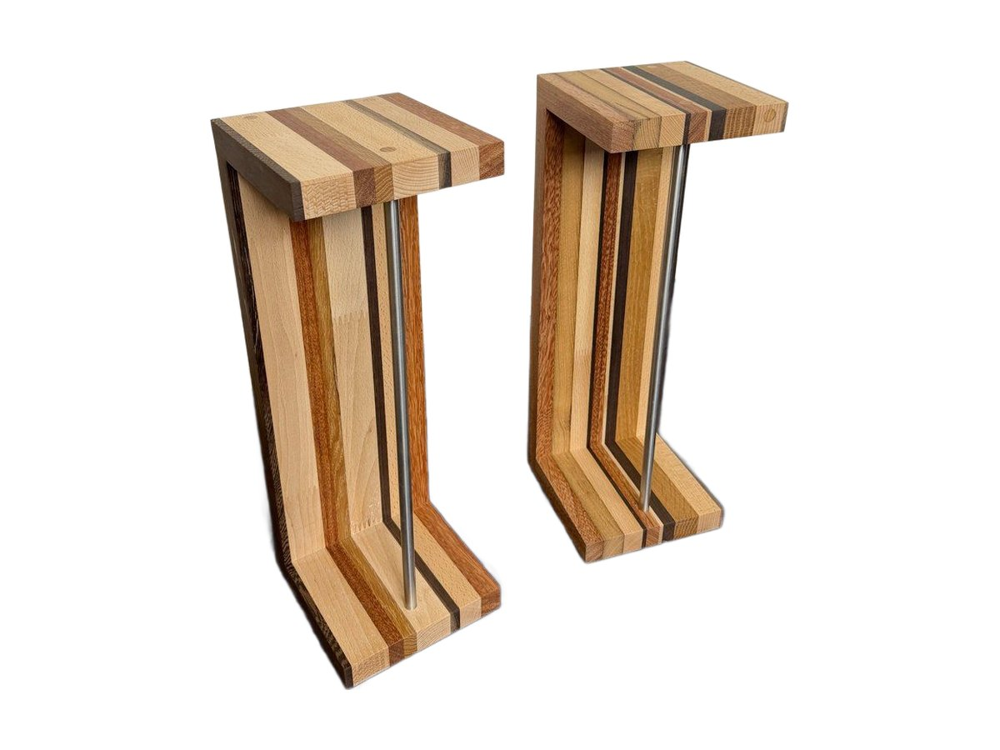
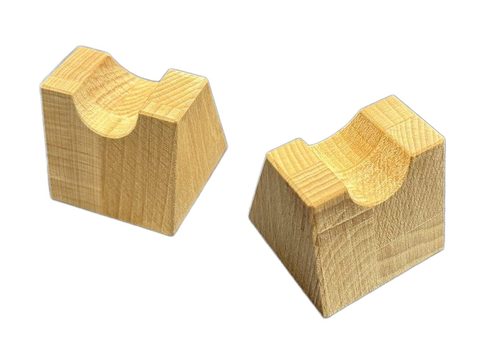
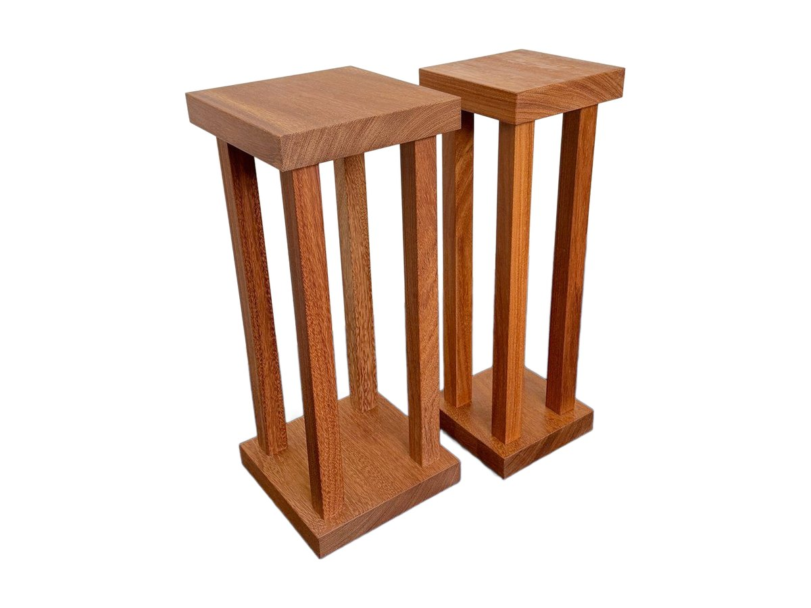
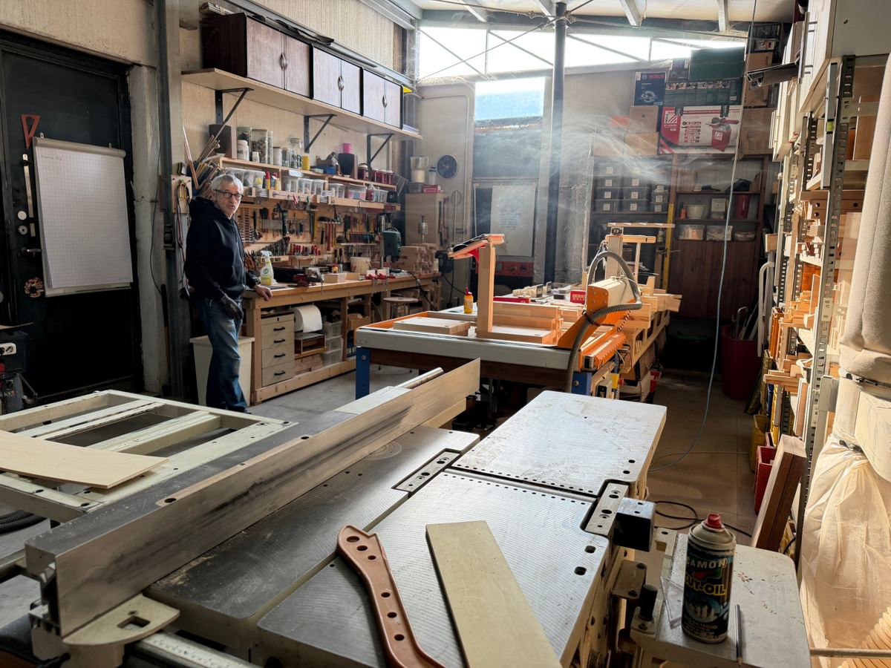

Il legno giusto sotto ogni nota.
Mobili costruiti a mano per casse, giradischi, amplificatori, streamer e vinili.
Pezzi unici, pensati per l'ascolto.
Ogni pezzo nasce nel mio laboratorio, dal legno massello alla finitura. Le misure si adattano ai tuoi apparecchi, non il contrario.

Mobile hi-fi Extrasound Vinyl
In cima il giradischi, al centro l'amplificatore, sotto fino a 90 vinili. In legno massello di Faggio o di Noce Canaletto.
Scopri il Vinyl
Stand per diffusori Wood Brick
Blocchi di multistrato di Pioppo e Noce Nazionale, separati da rondelle che fermano le vibrazioni. Lasciati al naturale.
Scopri il Wood Brick
Pannelli acustici Extrasound Wave
Tre pannelli in listarelle di essenze diverse, con un'onda sonora in rilievo. Diffondono il suono e arredano la stanza d'ascolto.
Scopri il Wave
Extrasound Cube
Il contenitore modulare in legno per i tuoi vinili. Lo usi da solo o lo componi con altri moduli, in Pioppo o in Doussiè.
Scopri il Cube
Stand per diffusori Extrasound Tree
In Faggio massello, a forma di albero: base a gradoni, fusto sottile e piano che si apre a scalini.
Scopri il Tree
Supporto in legno per lettori DAP
Un piccolo supporto da tavolo che tiene il lettore digitale portatile in piedi e inclinato: display e comandi sempre a portata, cavi in ordine.
Scopri Supporto DAP
Stand per diffusori Stile Pannello
In Faggio massello, con listelli sporgenti come un pannello acustico: correggono il suono su due lati.
Scopri lo Stile Pannello
Stand per diffusori Extrasound Rigatini
Stand per diffusori da scaffale fatti di righe di legni diversi accostate, con un tubo in acciaio inox che dà stabilità.
Scopri Rigatini
Sollevatori per cavi Extrasound Bridge
Piccoli blocchi in Faggio massello con un incavo in cima, per tenere i cavi dell'impianto sollevati dal pavimento e dai mobili.
Scopri Bridge
Stand per diffusori Extrasound Stylus
Una coppia di stand per diffusori da scaffale in doussiè massello: base e piano spessi 4 cm, colonne snelle, 61 cm di altezza.
Scopri Stylus
Stand per diffusori Art Triangle
Stand in faggio massello con il fusto aperto da tagli a triangolo: una scultura che regge il diffusore.
Scopri Art Triangle
Supporti inclinati per diffusori
Una coppia di supporti in legno che inclina i diffusori da scaffale verso chi ascolta.
Scopri i supporti inclinati
Stand per diffusori Modern Art Grey Buttons
Stand per diffusori a telaio, fatti di listelli in faggio massello fissati con bottoni grigi: leggeri da vedere, solidi da usare.
Scopri Modern Art Grey Buttons
Stand per diffusori Listelli Rado
Una colonna di listelli in faggio massello posati a distanza: lo stand è leggero, 6,7 kg, e lascia passare la luce.
Scopri Listelli Rado
Stand per diffusori Extrasound Ground
Stand bassi, alti 24 cm, per sollevare da terra i diffusori più grandi: fianchi in multistrato di pioppo e traversi in acciaio.
Scopri GroundDal tuo impianto al mobile finito.
Il lavoro parte da una conversazione sugli apparecchi che hai e su dove li vuoi mettere. Poi tutto nasce qui, nel mio laboratorio di Cesena.

Ascolto e misure
Mi racconti l'impianto e lo spazio. Insieme definiamo dimensioni, piani e passaggio dei cavi.
Scelta del legno
Propongo essenze e finiture adatte all'ambiente e al peso dei tuoi componenti.
Costruzione a mano
Taglio, incastro e finitura nel mio laboratorio. Ti aggiorno con le foto durante il lavoro.
Hai un impianto da sistemare?
Scrivimi con le misure dei tuoi apparecchi e ti rispondo con una proposta.
info@fabrizioberlati.com